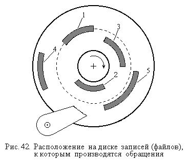

4.2.2. Диспетчеризация (управление порядком) обслуживания обращений
Управление порядком обслуживания (диспетчеризация) обращений к запоминающим устройствам с механическими перемещениями носителей информации и механизмов чтения/записи является программным способом повышения производительности памяти. Такой подход оказывается возможным, поскольку времена, затрачиваемые на выполнение этих перемещений, достигают значительных величин (до единиц – десятков миллисекунд).
Наиболее распространенным примером реализации данного подхода является обработка обращений к жесткому диску. Как известно (см. также раздел 1.1), процесс обслуживания обращения к диску складывается из трех стадий: перемещение блока головок чтения/записи на нужный цилиндр, ожидание подвода требуемого сектора и передача данных. Времена всех трех этапов оказываются одного порядка, если передаваемый файл имеет размер до нескольких сот килобайт. Для более коротких файлов времена подготовительных (поисковых) фаз имеют еще больший вес.
Время перемещения головок чтения/записи зависит от количества цилиндров, на которое их требуется переместить. Минимальное время (порядка 1-2 мс) затрачивается на переход на соседний цилиндр, максимальное (до 15-20 мс) – на перемещения от первого (внешнего) цилиндра диска к последнему (внутреннему) или наоборот.
В обычном режиме обращения к диску обслуживаются в порядке их поступления (первый пришел – первый обслужен – ПППО). Но время перемещения блока головок чтения/записи и, следовательно, время обслуживания обращения зависит от взаимного физического расположения на диске файлов обращений, обслуживаемых друг за другом.
Поэтому напрашивается решение об обслуживании обращений в таком порядке, который минимизирует времена, затрачиваемые на перемещение головок. Такую дисциплину обслуживания называют МВДП – “минимальное время доступа – первый”. И действительно, пусть к жесткому диску имеется очередь из обращений, ожидающих обслуживания, файлы которых расположены на диске так, как показано на рис. 42, причем цифры означают порядок, в котором поступили обращения.

Тогда порядок их обслуживания, при котором путь перемещения блока головок чтения/записи будет минимальным, следующий: 1 – 5 – 4 – 3 – 2, то есть не совпадает с порядком их поступления. Тогда, если обращения обслуживать в том порядке, для которого перемещения блок головок чтения/записи минимальны, сократится среднее время, затрачиваемое на первую фазу обращения – установку головок, а общая пропускная способность дискового ЗУ возрастет. Причем, чем больше очередь обращений к диску, тем больше будет эффект от использования этого способа.
Однако было установлено, что этот алгоритм выбора на обслуживание обращений, адресующихся к ближайшим по отношению к текущему положению головок чтения/записи цилиндрам приводит к “дискриминации” обращений, адресующихся к цилиндрам, более удаленным от средней дорожки (т.е. расположенным на крайних и на центральных дорожках). Время ожидания в очереди для таких обращений возрастает, причем этот рост может быть весьма значительным.
Поэтому на практике, используют несколько иной порядок обслуживания, который если и не дает минимально возможного суммарного перемещения блока головок, но и не приводит к чрезмерным задержкам в обслуживании отдельных обращений. Такая дисциплина обслуживания, к тому же простая в реализации, называется дисциплиной сканирования (СКАН). При этой дисциплине, блок головок чтения/записи, обслуживая обращения, перемещается от края диска к центру и обратно, меняя направление движения лишь у первого (внешнего) и последнего (внутреннего) из цилиндров, на которых расположены файлы обслуженных обращений. При этом из очереди выбирается к обслуживанию обращение, адресующееся к цилиндру (дорожке), находящемуся ближе всего к головкам в направлении их движения. Т.е. имеет место нечто похожее на работу стеклоочистителя автомобиля. Например, если на рис. 42 блок головок чтения/записи движется в направлении к центру диска, то после передачи данных для обращения 1 будет начато обслуживание обращения 3. Если же головки двигаются в обратном направлении, то следующим будет обслужено обращение 5.
Дисциплина СКАН может быть реализована как программно, так и аппаратно. Многие операционные системы поддерживают подобные стратегии. Известны и другие разновидности дисциплин обслуживания обращений.